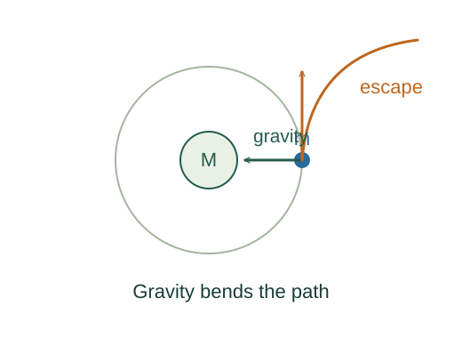

Derive gravitational potential and escape speed
Gravity weakens with distance, so escaping requires a finite amount of work. Integrating its inverse-square force gives the required energy and the minimum ideal escape speed.
What the symbols mean
r: distance from the central mass; U: potential energy with zero at infinity; M: central mass; m: escaping mass.
When this applies
Newtonian isolated spherical central body, exterior motion, negligible air resistance, and no additional propulsion after launch.
Developing the argument

Choose the potential reference
Set U(∞) = 0. In the outward radial direction, gravity has component Fr = −GMm/r².
Integrate the inverse square
The antiderivative of 1/r² is −1/r. Keeping both the force sign and the potential definition gives a negative bound-state potential.
A closer lookWhy is potential change minus force integrated? ↗Describe marginal escape
The minimum unbound trajectory reaches arbitrarily large distance with speed approaching zero. Its total mechanical energy is therefore zero.
Solve and compare with circular motion
Cancel m and solve the energy equation. At the same radius the escape speed is √2 times the circular-orbit speed.
A worked example
At Earth’s surface, r ≈ 6.37 × 10⁶ m gives an ideal escape speed about 11.2 km/s. This neglects rotation and atmospheric drag.
Derivation behind this calculation ↗A point to keep straight
The near-surface expression mgh assumes almost constant g. It cannot be extrapolated all the way to infinity.
Check the assumptions and derivation ↗